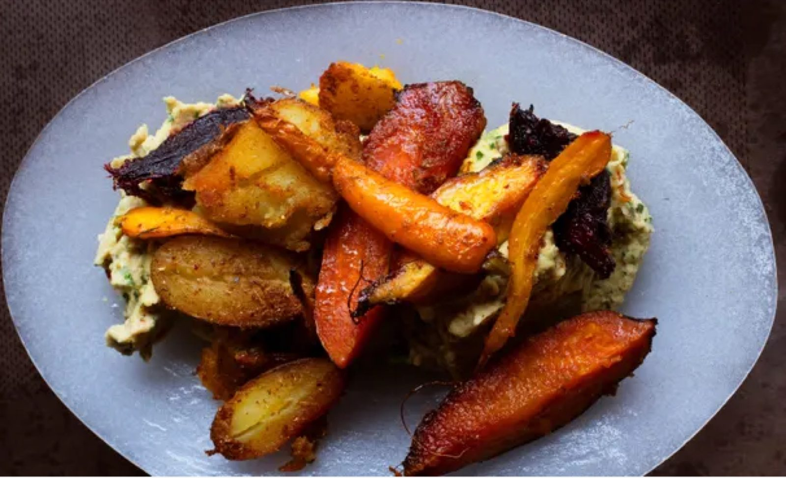

Roast Spiced Winter Roots with Haricot Mash

Before you start heat the oven to 180°C fan/gas 6.
Ingredients
For the mash
Method
- Peel and crush the 2 large garlic cloves to a paste. Using a spice mill or pestle and mortar, crush the 2 tsp cumin and 2 tsp coriander seeds to a coarse powder, then mix in the ½ tsp sea salt and several grinds of black pepper.
- Add the pinch of dried chilli flakes and stir in the crushed garlic and 4 tbsp groundnut oil. Set the oven at 180°C fan/gas 6.
- Bring a couple of deep pans of water to the boil. Trim the 500g beetroot, without breaking the skin, then put them in the water and let them cook for 25-30 minutes, depending on their size, until they are soft enough to pierce easily with a skewer. Cut the 500g potatoes in half and add them to the second pan and boil them for 15 minutes.
- Drain the beetroot and cut them in half. If they are large, cut them into wedges. Drain the potatoes. Slice the 8 carrots in half. Toss the carrots, beetroot and potatoes in the spiced oil then transfer to a roasting tin and bake for 35-45 minutes. (I like to turn each one over halfway through cooking so they get evenly browned.)
- To make the mash, drain the 2 x 400g tins of beans and put them in a small pan, just covered with water. Bring to the boil, then lower the heat and leave to simmer for 10 minutes.
- Drain and return the beans to the empty pan, add the 2 tbsp olive oil, a good handful of parsley leaves, a little black pepper and the 1 tbsp lemon juice, then mash to a smooth purée with a potato masher or food processor.
- Pile the mashed beans on a serving dish, then place the roasted spiced roots on top and serve.
Notes
Vegan.